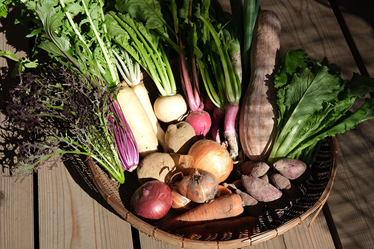

果物と野菜の本当のおいしさを
皆様にお届けする”fruvege”です。
自然の恵みを生かした生産方式で育てた
フルーツとベジタブルを皆様にご提供いたします。

fresh seasonal fruits

ミニトマト
tomato
果実は直径2～3センチメートルの球形で皮はやや硬いが甘味が多く，料理の飾りに最適です。
パプリカ
paprika
肉厚で甘味があり、栄養価も高い。ビタミンCが豊富で疲労回復にも効果がある。

万願寺とうがらし
manganji pepper
京都府舞鶴市が発祥の京野菜。果肉が大きくて分厚く柔らかく甘みがある。